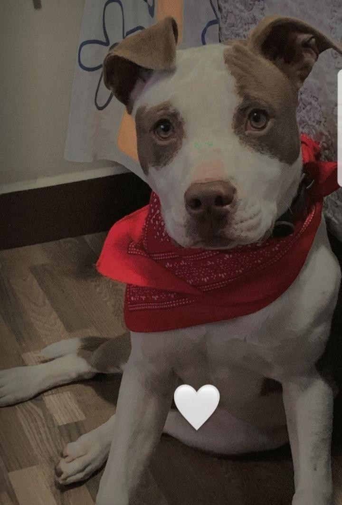

Regresar
Student 3

|
Name: Freddy Rodriguez
Age: 20 years old
Color: red
Home: live in Conocoto
with her parents and brother .
Pets: dog named Apollo
Hobby: goes to the gym that is
located in San Gabriel-Tingo
Student Trajectory
Elementary School: Antonio Jose de Sucre
High School: Juan Pío Montufar 8th grade and
Benalcazar school graduated
University: ESPE
Additional Information
He applied only at ESPE
and it was his first career option